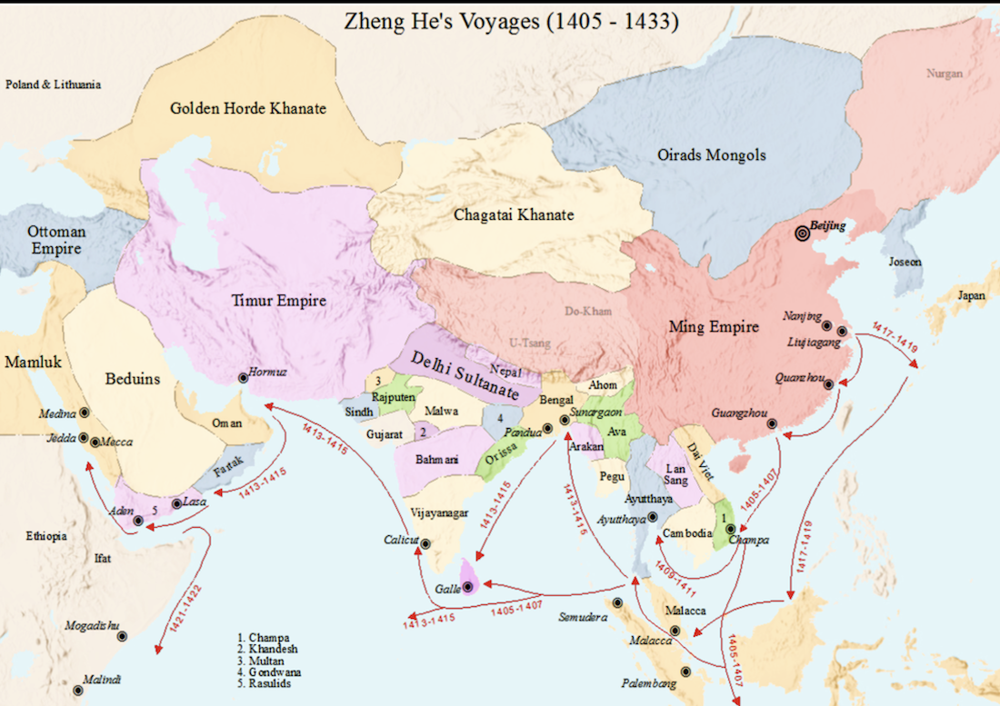
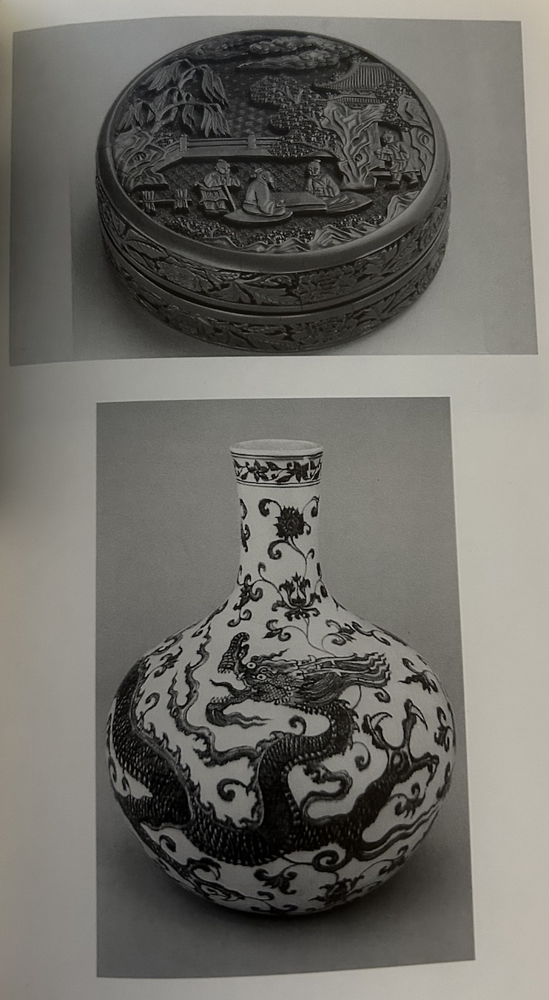
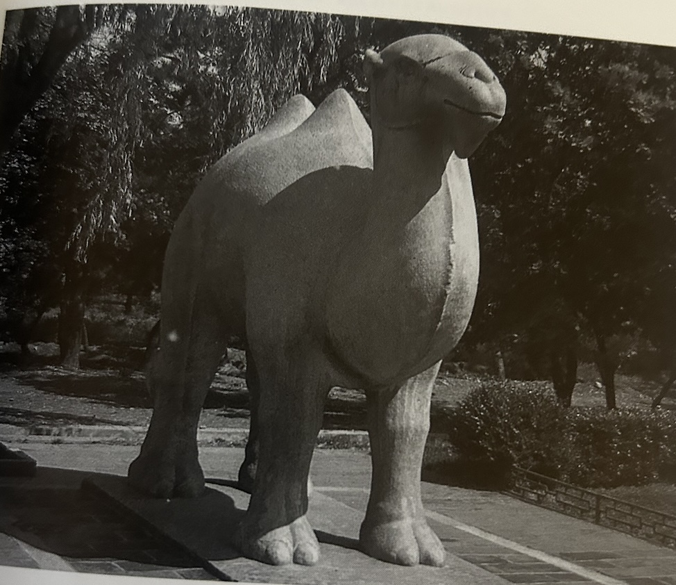

From 1405 to 1433, admiral Zheng He led seven major maritime expeditions into the Indian Ocean and beyond, dramatically extending China’s overseas contacts. Known in Chinese history as "the Seven Voyages to the Western Ocean" 1, these missions were unprecedented in scale for their time and had lasting effects on trade, diplomacy, and multicultural interaction.2
Chronology and Geographic Reach 2
Zheng He’s voyages took place roughly every few years over a span of nearly 30 years:
- 1st Voyage (1405–1407): Departed from Liujiagang near Suzhou, sailing through the South China Sea into the Strait of Malacca and then to ports in Southeast Asia and South Asia.
- 2nd–3rd Voyages (1407–1413): Expanded trade and diplomatic contacts deeper into South Asia, visiting states on the Indian subcontinent
- 4th Voyage (1413–1415): First to reach the Arabian Peninsula and East Africa’s Swahili Coast, opening new long-distance sea routes.
- 5th–6th Voyages (1417–1422): Continued extensive voyages through Southeast Asia, South Asia, and the Persian Gulf, strengthening ties with numerous ports.
- 7th and Final Voyage (1431–1433): Again traveled across the Indian Ocean to Arabia and East Africa; Zheng He died during the return leg near Calicut (present-day Kozhikode, India).
Across all seven expeditions, his fleets visited more than 30 countries and regions from Vietnam and Thailand to Arabia and the East African coast.
Routes of Zheng He’s Voyages from 1405 to 1433 (source Wikipedia)
Scale of the Voyages: Ships, Crews, and Navigation
 Drawing of a fuchuan built with "dragon bone" technology used in Zheng He expedition 2
Drawing of a fuchuan built with "dragon bone" technology used in Zheng He expedition 2
In When China Rules the Sea, Louise infers Zheng He commanded one of the largest naval fleets of the premodern world:
- Fleet Size: Estimates vary, but individual voyages included between 40 and 300+ ships, with around 20,000–27,500 crew members comprising sailors, soldiers, officials, interpreters, and artisans.
- Navigation: The fleets used sophisticated navigational tools of their era, including compasses and detailed coastal charts (e.g., the Zheng He navigation maps) to cross vast stretches of open water. Ships also equipted with " high prow and keel or "dragon bone" running the length of the hull provided a model for the treasure ship"2.
- lMaritime Routes: These voyages extended from Southeast Asian seas into the Indian Ocean, around the Malay Peninsula, through the Bay of Bengal, and westward to the Arabian Sea, Persian Gulf, Red Sea, and East African coast — including modern-day regions such as Somalia and Mozambique.
The routes themselves helped forge what scholars call early iterations of the Maritime Silk Road — sea lanes that carried goods, people, and ideas across continents
Trade and Economic Exchange 4
Although Zheng He’s voyages were not military conquests, they played a crucial role in facilitating trade and commercial exchange across the Indian Ocean. According to Tsai, although these voyages were not conquest missions, they actively facilitated trade and commercial interaction:
Ceramic Vases During the Ming Dynasty displayed at National Palace Museum of Taiwan 4
- Goods Exchanged:The fleet carried valuable Chinese exports such as silk, porcelain, and tea, which were highly prized in foreign markets. In return, the voyages brought back exotic animals and rare products, including giraffes (then interpreted as the mythical qilin) from East Africa, along with spices, precious woods, gemstones, and other luxury goods. These exchanges not only enriched China’s markets but also encouraged cross-cultural interaction between distant regions..
- Tribute System: At numerous ports, local rulers presented tribute to the Ming court, formally recognizing Chinese authority and prestige. This practice reinforced diplomatic relationships, allowing China to exert soft power without direct colonization, while also promoting mutual respect and the exchange of cultural knowledge.
- Trade Centers: The voyages contributed to the growth of key commercial hubs, most notably Malacca, which emerged as a central node in regional and long-distance trade. Its strategic location on the Strait of Malacca allowed it to serve as a gateway between East and West, connecting Southeast Asian, Indian, Arab, and Chinese merchants and integrating diverse trading cultures.
- Maritime Commerce: By establishing sustained shipping routes between China and markets in South and Southeast Asia, the Middle East, and East Africa, Zheng He’s expeditions helped lay the groundwork for early patterns of global maritime trade. These networks enabled not only the exchange of goods but also ideas, technologies, and cultural practices, creating a lasting legacy of economic and diplomatic connectivity across the Indian Ocean world.
Cultural and Diplomatic Impacts
Zheng He’s expeditions were not merely commercial ventures or naval demonstrations; they were carefully orchestrated missions of cultural diplomacy, designed to showcase the wealth and sophistication of the Ming court while fostering exchange, understanding, and cooperation between China and the diverse societies of Southeast Asia, South Asia, the Middle East, and East Africa.
A camel sattue serving serving Emperor Yongle at Yongle Mausoleum (photo by Henry Tsai) (1415). 4
- Diplomacy and Relations: Acting as the imperial envoy of the Ming court, Zheng He carried gifts and official envoys to foreign rulers across Southeast Asia, South Asia, the Middle East, and East Africa. In return, he often received dignitaries and tribute, creating diplomatic ties based on mutual recognition and respect rather than territorial conquest or colonization. These missions projected Chinese prestige while fostering stable, long-term relationships with diverse states.
- Technology and Knowledge Sharing: The voyages facilitated cross-cultural transfer of knowledge and skills. Contacts with foreign societies allowed the exchange of shipbuilding techniques, navigation practices, agricultural methods, animal husbandry, and even urban planning or fortification strategies. This sharing of expertise helped enrich both Chinese understanding of distant lands and the technological capacities of the regions they visited.
- Multicultural Awareness: Zheng He’s fleets exposed Chinese sailors, officials, and soldiers to a wide array of cultures, languages, religions, and customs, enhancing geographic knowledge and promoting long-term intercultural awareness. These encounters encouraged curiosity and understanding, forming early patterns of global cultural interaction.
Rather than pursuing territorial conquest, Zheng He’s missions emphasized diplomacy, trade cooperation, and cultural dialogue, creating networks of mutual respect that strengthened both China’s position abroad and the interconnectedness of the broader Indian Ocean world.
Reference
- Ma Huan, 《瀛涯勝覽》Ying-ya Sheng-lan (The Overall Survey of the Ocean’s Shores), trans. Feng Ch’eng-Chün (Cambridge: Hakluyt Society, 1970), 108–14.Washington. https://faculty.washington.edu/qing/huan_ying-yai_sheng-lan%5B1%5D.pdf
- Levathes, Louise. When China Ruled the Seas: The Treasure Fleet of the Dragon Throne, 1405–1433. New York: Oxford University Press, 1994.
- Dreyer, Edward L. Zheng He: China and the Oceans in the Early Ming Dynasty, 1405–1433. New York: Pearson Longman, 2007.https://archive.org/details/zhenghechinaocea0000drey/mode/2up
- Tsai, Shih-shan Henry. Perpetual Happiness: The Ming Emperor Yongle. Seattle: University of Washington Press, 2001.
- John Keay, China: A History, narrated by Anne Flosnik (New York: Basic Books, 2008), audiobook, accessed via Audible.
- "The Voyages of Chinese Admiral Zheng He." Historic World Events, Gale, 2025. Gale In Context: World History, link.gale.com/apps/doc/BWLMLZ802164638/WHIC?u=viva2_nvcc&sid=bookmark-WHIC&xid=07c5e324. Accessed 16 Feb. 2026.
- "Zheng He Sails the Seas: 1405–1433." Global Events: Milestone Events Throughout History, edited by Jennifer Stock, vol. 2: Asia and Oceania, Gale, 2014. Gale In Context: World History, link.gale.com/apps/doc/BBJAUU594912101/WHIC?u=viva2_nvcc&sid=bookmark-WHIC&xid=0bdcadce. Accessed 16 Feb. 2026.
® 2026 Phuong-Anh Nguyen. Created for HIS 111 Midterm Project. All rights reserved.